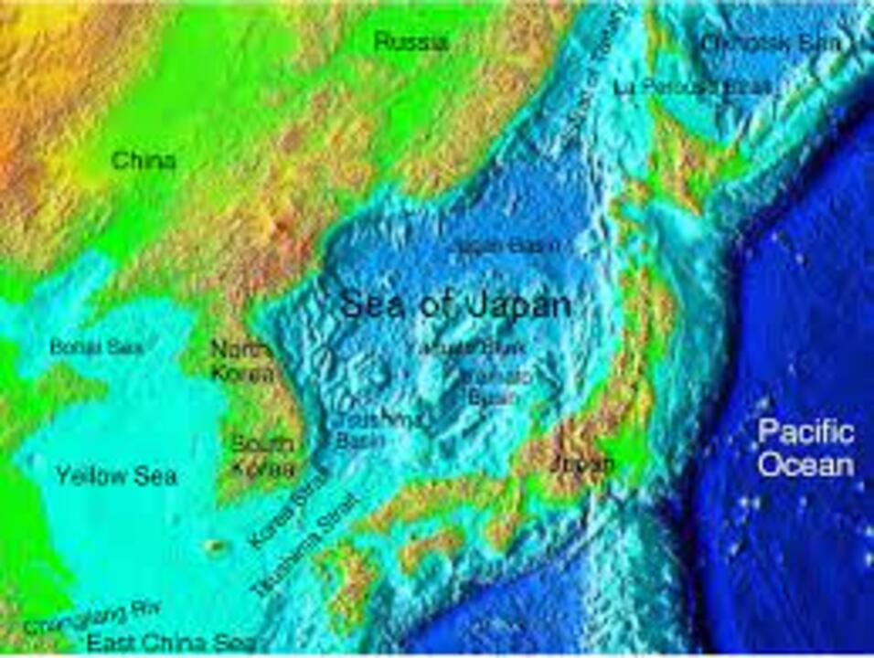

>> Japan's sea territory is 4,470,000 km2 (1,730,000 sq mi). Japan ranks fourth with its exclusive economic zone ocean water volume from 0 to 2,000 m (6,600 ft) depth. Japan ranks fifth with sea volume of 2,000-3,000 meters, fourth with 3,000-4,000 meters, third with 4,000-5,000 meters and first with volume of 5,000 to over 6,000 meters.
>> There are large quantities of marine life and mineral resources in the ocean and seabed of Japan. At a depth of over 1,000 m (3,300 ft) there are minerals such as manganese nodules, cobalt in the crust and hydrothermal deposits.
